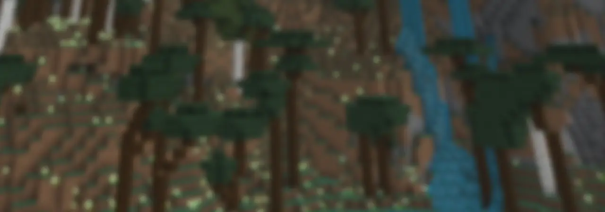

Minecraft Java Edition data packs, mods & resource packs.
This site needs JavaScript enabled to build its project catalog. In the meantime, you can browse our projects directly on Modrinth or GitHub.
